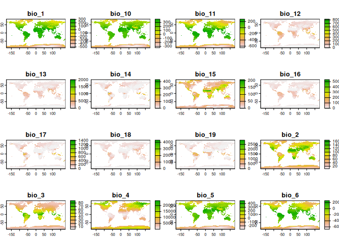

PaleoClim is a set of free, high resolution paleoclimate surfaces covering the whole globe. It includes data on surface temperature, precipitation and the standard bioclimatic variables commonly used in ecological modelling, derived from the HadCM3 general circulation model and downscaled to a spatial resolution of up to 2.5 minutes.
This package provides a simple interface for downloading PaleoClim data in R, with support for caching and filtering retrieved data by period, resolution, and geographic extent.
Installation
You can install the latest release of rpaleoclim from CRAN with:
install.packages("rpaleoclim")Or the development version from GitHub using the remotes package:
remotes::install_github("joeroe/rpaleoclim")Usage
The package includes two functions, paleoclim() and load_paleoclim(). paleoclim() downloads data from PaleoClim with the desired period and resolution and reads it into R as a SpatRaster object.

By default, files from PaleoClim are cached in a local temporary directory to avoid repeated download of the same data. load_paleoclim() reads local PaleoClim files (in .zip format) in the same way.
For further details see the introduction to rpaleoclim vignette (vignette("rpaleoclim")).
Citation
Please follow the instructions from the authors when citing PaleoClim data. At time of writing, this includes a citation to the paper the describing the PaleoClim database:
- Brown, J.L., Hill, D.J., Dolan, A.M., Carnaval, A.C., Haywood, A.M., 2018. PaleoClim, high spatial resolution paleoclimate surfaces for global land areas. Scientific Data 5, 180254. doi:10.1038/sdata.2018.254
As well as the original papers for the individual original datasets used.
Use citation("paleoclim") for more details and the references in BibTeX format.